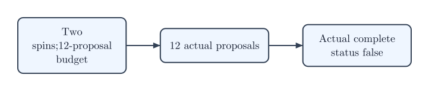
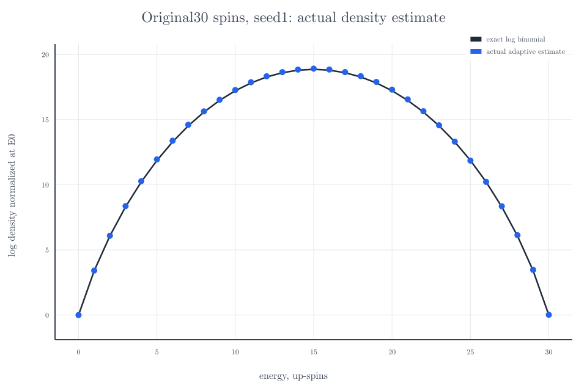
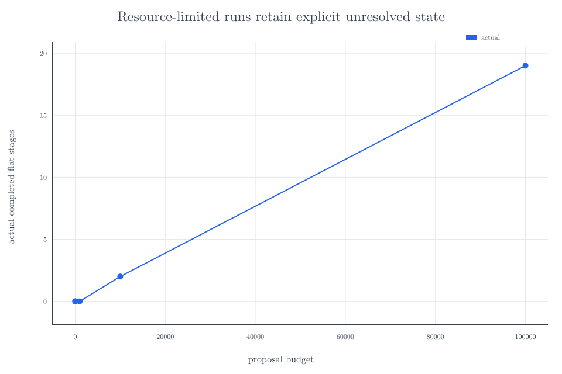
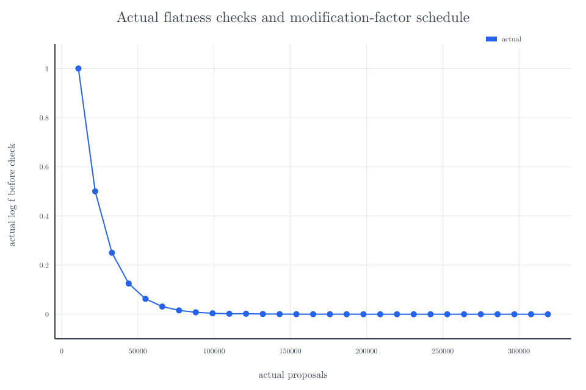

Wang-Landau: actual proposals, flatness checks and bounded sampling
Abstract
Estimating how many configurations share an energy can require visiting rare energies. Wang-Landau adapts a density estimate during the walk to flatten its energy histogram.
The method
For the toy N independent binary spins, energy E is the number of up-spins and exact g(E)=C(N,E). Propose one spin flip and accept with min(1,exp(logg(E_old)−logg(E_new))). After either acceptance or rejection, increment logg at the visited energy by log_f and increment its histogram. A stage is declared flat only if every bin is positive and min(hist)>=flatness*mean(hist). Halve log_f after a flat stage and reset that stage histogram. Normalizing by subtracting logg(0) fixes its arbitrary additive constant. The finite halving schedule and flatness criterion are algorithmic stopping rules, not a proof of density-estimation convergence.
Simple worked example
#include <dm/dm.hpp>
int main() {
namespace a = dm::algorithms;
namespace g = dm::graphics;
std::filesystem::create_directories("build");
a::WangLandauOptions o;
o.max_moves = 12;
o.check_interval = 6;
o.max_move_records = 12;
auto r = a::wang_landau_work(2, o);
std::print("| old energy | proposed | actual visited | accepted | actual log ratio " "|\n|---:|---:|---:|---|---:|\n");
for (auto q : r.move_records)
std::print("|{}|{}|{}|{}|{}|\n", q.before, q.proposed, q.after,
q.accepted, q.log_ratio);
std::print("\nActual moves {}; completed {}; estimate `{}`.\n", r.moves,
r.complete, r.log_density);
g::Diagram concept_diagram(48, 1100);
concept_diagram.node("n0", {0, 0}, "Two spins;12-proposal budget");
concept_diagram.node("n1", {5, 0},
std::format("{} actual proposals", r.moves));
concept_diagram.node("n2", {10, 0},
std::format("Actual complete status {}", r.complete));
concept_diagram.edge("n0", "n1").edge("n1", "n2");
concept_diagram.save_svg("build/wang_landau_tiny.svg");
}| old energy | proposed | actual visited | accepted | actual log ratio |
|---|---|---|---|---|
| 0 | 1 | 1 | true | 0 |
| 1 | 0 | 0 | true | 1 |
| 0 | 1 | 1 | true | 0 |
| 1 | 0 | 0 | true | 1 |
| 0 | 1 | 1 | true | 0 |
| 1 | 0 | 0 | true | 1 |
| 0 | 1 | 1 | true | 0 |
| 1 | 0 | 0 | true | 1 |
| 0 | 1 | 1 | true | 0 |
| 1 | 2 | 2 | true | 5 |
| 2 | 1 | 2 | false | -4 |
| 2 | 1 | 2 | false | -3 |
Actual moves 12; completed false; estimate [0, 1, -1].

The retained original experiment
#include <dm/dm.hpp>
int main() {
namespace a = dm::algorithms;
namespace g = dm::graphics;
std::filesystem::create_directories("build");
auto r = a::wang_landau_work(30);
std::vector<double> energy, exact;
std::print("| E | actual log g | exact log binomial | absolute error |\n|---:|---:|---:|---:|\n");
double max_error = 0;
for (int E = 0; E <= 30; ++E) {
double ex = std::lgamma(31) - std::lgamma(E + 1) - std::lgamma(31 - E);
energy.push_back(E);
exact.push_back(ex);
max_error = std::max(max_error, std::abs(r.log_density[E] - ex));
if (E % 5 == 0)
std::print("|{}|{}|{}|{}|\n", E, r.log_density[E], ex,
std::abs(r.log_density[E] - ex));
}
std::print("\nActual complete {}; proposals {}; flat stages {}; maximum error {}.\n",
r.complete, r.moves, r.completed_stages, max_error);
auto p = g::RPlot::create();
p.line(energy, exact, "exact log binomial", {31, 41, 55}, 2.5);
p.points(energy, r.log_density, "actual adaptive estimate", {37, 99, 235}, 5);
p.title("Original30 spins, seed1: actual density estimate").x_label(
"energy, up-spins").y_label("log density normalized at E0");
p.save_svg("build/wang_landau_original.svg");
}| E | actual log g | exact log binomial | absolute error |
|---|---|---|---|
| 0 | 0 | 0 | 0 |
| 5 | 11.949041366577148 | 11.867139383067595 | 0.08190198350955313 |
| 10 | 17.27454376220703 | 17.218207315001166 | 0.05633644720586517 |
| 15 | 18.914995193481445 | 18.85969358114839 | 0.05530161233305364 |
| 20 | 17.303388595581055 | 17.21820731500117 | 0.08518128057988505 |
| 25 | 11.853166580200195 | 11.867139383067602 | 0.013972802867407097 |
| 30 | 0.018175125122070312 | 0 | 0.018175125122070312 |
Actual complete true; proposals 1736000; flat stages 20; maximum error 0.0853886552131442.

Checking the theory and controls
#include <dm/dm.hpp>
int main() {
namespace a = dm::algorithms;
namespace g = dm::graphics;
std::filesystem::create_directories("build");
std::vector<double> x, y;
std::print("| move budget | actual proposals | complete | current log f |\n|---:|---:|---|---:|\n");
for (std::size_t budget : {0, 10, 100, 1000, 10000, 100000}) {
a::WangLandauOptions o;
o.max_moves = budget;
auto r = a::wang_landau_work(4, o);
std::print("|{}|{}|{}|{}|\n", budget, r.moves, r.complete,
r.log_f_remaining);
x.push_back(budget);
y.push_back(r.completed_stages);
}
auto p = g::RPlot::create();
p.line(x, y, "actual", {37, 99, 235}, 2);
p.points(x, y, "", {37, 99, 235}, 5);
p.title("Resource-limited runs retain explicit unresolved state").x_label(
"proposal budget").y_label("actual completed flat stages");
p.save_svg("build/wang_landau_controls.svg");
}| move budget | actual proposals | complete | current log f |
|---|---|---|---|
| 0 | 0 | false | 1 |
| 10 | 10 | false | 1 |
| 100 | 100 | false | 1 |
| 1000 | 1000 | false | 1 |
| 10000 | 10000 | false | 0.25 |
| 100000 | 100000 | false | 1.9073486328125e-06 |

Sensitivity and selected work
#include <dm/dm.hpp>
int main() {
namespace a = dm::algorithms;
namespace g = dm::graphics;
std::filesystem::create_directories("build");
a::WangLandauOptions o;
o.max_check_records = 100;
auto r = a::wang_landau_work(10, o);
std::vector<double> x, y;
std::print("| proposals | actual log f | actual minimum | actual mean | actual flat " "|\n|---:|---:|---:|---:|---|\n");
for (auto q : r.check_records) {
std::print("|{}|{}|{}|{}|{}|\n", q.moves, q.log_f, q.minimum, q.mean,
q.flat);
x.push_back(q.moves);
y.push_back(q.log_f);
}
auto p = g::RPlot::create();
p.line(x, y, "actual", {37, 99, 235}, 2);
p.points(x, y, "", {37, 99, 235}, 5);
p.title("Actual flatness checks and modification-factor schedule").x_label(
"actual proposals").y_label("actual log f before check");
p.save_svg("build/wang_landau_work.svg");
}| proposals | actual log f | actual minimum | actual mean | actual flat |
|---|---|---|---|---|
| 11000 | 1 | 984 | 1000 | true |
| 22000 | 0.5 | 988 | 1000 | true |
| 33000 | 0.25 | 980 | 1000 | true |
| 44000 | 0.125 | 971 | 1000 | true |
| 55000 | 0.0625 | 958 | 1000 | true |
| 66000 | 0.03125 | 962 | 1000 | true |
| 77000 | 0.015625 | 917 | 1000 | true |
| 88000 | 0.0078125 | 945 | 1000 | true |
| 99000 | 0.00390625 | 902 | 1000 | true |
| 110000 | 0.001953125 | 848 | 1000 | false |
| 121000 | 0.001953125 | 1841 | 2000 | true |
| 132000 | 0.0009765625 | 873 | 1000 | true |
| 143000 | 0.00048828125 | 859 | 1000 | true |
| 154000 | 0.000244140625 | 772 | 1000 | false |
| 165000 | 0.000244140625 | 1738 | 2000 | true |
| 176000 | 0.0001220703125 | 821 | 1000 | false |
| 187000 | 0.0001220703125 | 1879 | 2000 | true |
| 198000 | 6.103515625e-05 | 764 | 1000 | false |
| 209000 | 6.103515625e-05 | 1558 | 2000 | false |
| 220000 | 6.103515625e-05 | 2306 | 3000 | false |
| 231000 | 6.103515625e-05 | 3487 | 4000 | true |
| 242000 | 3.0517578125e-05 | 881 | 1000 | true |
| 253000 | 1.52587890625e-05 | 828 | 1000 | false |
| 264000 | 1.52587890625e-05 | 1715 | 2000 | true |
| 275000 | 7.62939453125e-06 | 863 | 1000 | true |
| 286000 | 3.814697265625e-06 | 882 | 1000 | true |
| 297000 | 1.9073486328125e-06 | 711 | 1000 | false |
| 308000 | 1.9073486328125e-06 | 1652 | 2000 | false |
| 319000 | 1.9073486328125e-06 | 2783 | 3000 | true |

Interpretation and limits
The original xorshift and conditional-uniform draw sequence is retained; modulo spin selection is not mathematically unbiased for every N. N0 is rejected. Actual proposal budgets bound the formerly unbounded loops, and the legacy vector wrapper throws if its default budget cannot finish. Captured records are bounded prefixes; they do not replay or alter sampling. This toy has known binomial degeneracies and no interacting-spin Hamiltonian.
All programs are complete editable C++ sources; figures are local files. Actual traces and selected counts come from the producing native kernels, not an independent report reconstruction.
References
Verified in the shared final four-document batch: 46 scoped native cases;8
directly instrumented ASan/UBSan cases;42 executable public examples;168/168
definitions across10 full scopes;4 hovers;6866 independent records/32327
checks;four frozen surfaces with original seeded fixtures retained;5
checkout/installed standalone headers and linked four-family consumer;16
executed programs and16 inspected figures with both exports. Receipts:
build/mepml-conversion/batch-424-427/.